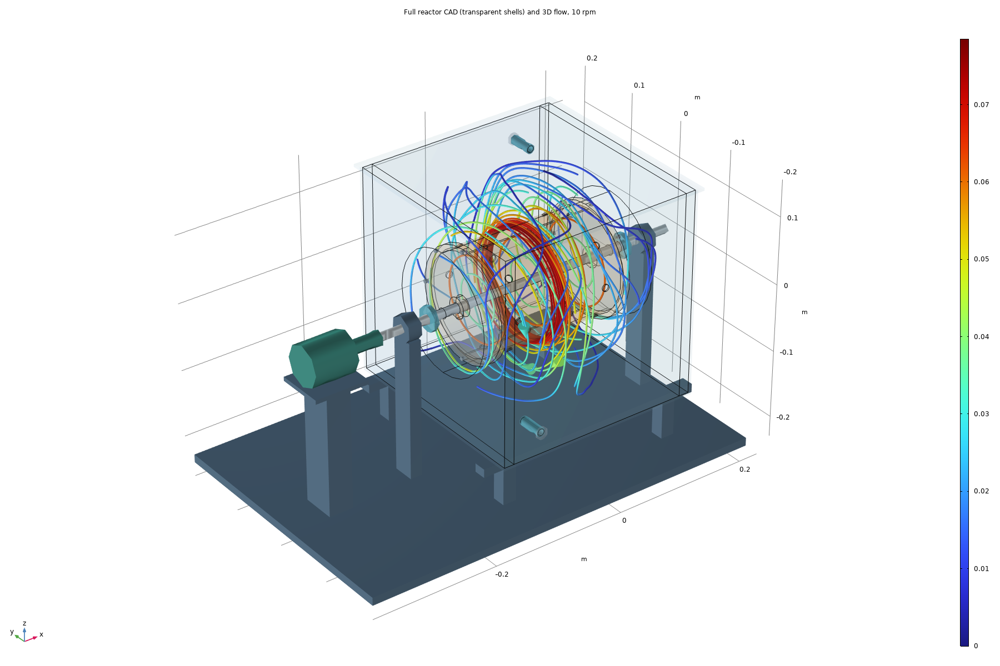
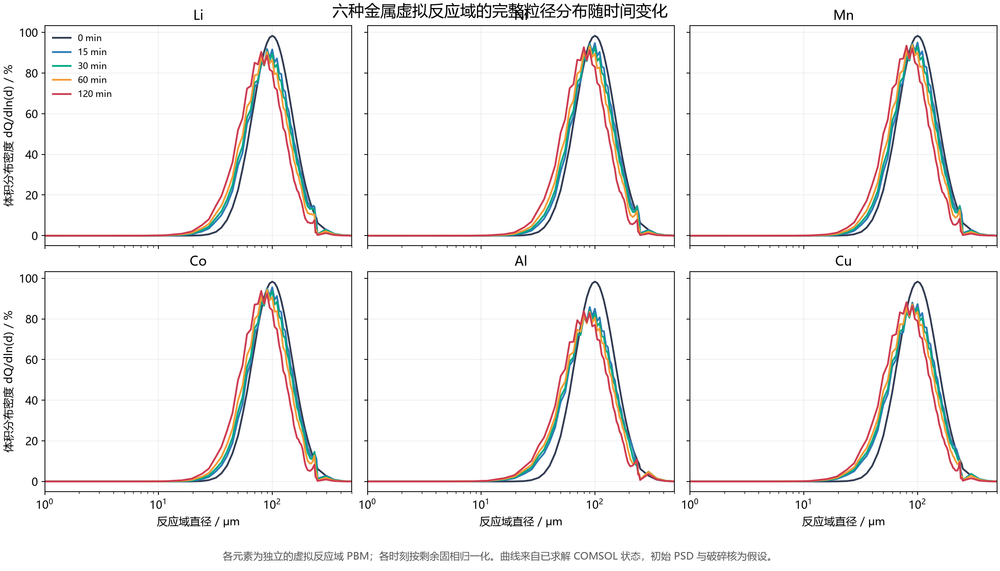
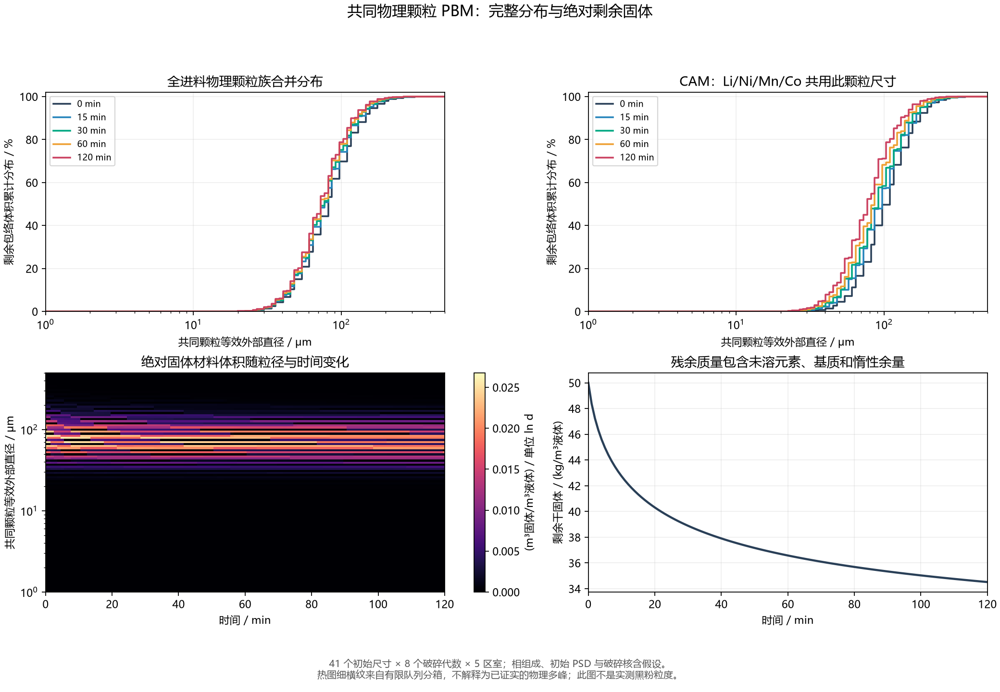

Rotating-drum leaching reactor
Imported drum assembly, resolved liquid flow, compartment transport, leaching kinetics and particle-size evolution.



Result scope
Two model generations are shown separately. The newer acid-feedback/shared-particle equations have not been transferred to the archived MPH model. Geometry scaling, particle transport and kinetics transfer are design assumptions; no device experiment is claimed.